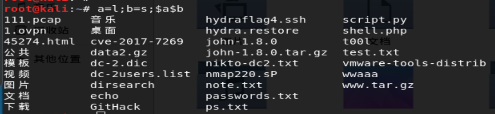

代码执行+命令执行漏洞学习笔记+靶场实战
命令注入
一、什么是命令执行漏洞
命令执行漏洞概念：
当应用需要调用一些外部程序去处理内容的情况下，就会用到一些执行系统命令的函数。如PHP中的system，exec，shell_exec等，当用户可以控制命令执行函数中的参数时，将可注入恶意系统命令到正常命令中，造成命令执行攻击。
漏洞危害：
- 继承web服务器程序的权限，去执行系统命令。
- 继承web服务器程序的权限，读取文件
- 反弹shell
- 控制整个网站甚至控制整个服务器
代码层：一些商业应用需要执行命令，商业应用的一些核心代码可能封装在二进制文件中，在web应用中通过system函数来调用；
系统层：（bash破壳漏洞）如果我们能够控制执行的bash的环境变量，就可以通过破壳漏洞来执行任意代码；
第三方组件层：很典型的就是wordpress中，可以选择使用imageMagick这个常用的图片处理组件，对用户上传的图片进行处理，造成命令执行，另外java中的命令执行漏洞（struts2/Elasticsearch等）
常用的Linux命令总结：
1 | ls cd mkdir rm cp mv touch cat more chmod find vi du ifconfig ping netstat lsof shutdown uname kill... |
命令执行与代码执行的区别：
代码执行是通过调用服务器网站代码进行执行，而命令注入则是调用操作系统命令进行执行。
常见的命令执行函数：
system()
passthru()
- exec()
- shell_exec()
- `反引号
ob_start()
popen()
proc_oprn()
。。。
常见的绕过方法
1.空格过滤绕过
空格可以用以下字符替换
1 | < <> %20(space) %09(tab) $IFS$9 ${IFS} $IFS等 |
测试：

2.命令分隔符
1 | linux:%0a、%0d、;、&、|、&&、||、 |
%0a符号：换行符 %0d符号：回车符 ;符号：起连续指令的功能
& && ||的区别
（1）& 表示先执行CMD1 再执行CMD2，这里不考虑CMD1是否成功。使用CMD1 & CMD2
（2）&& 表示先执行CMD1，成功后再执行CMD，否则不执行CMD2。使用CMD1 && CMD2
（3）|| 先执行CMD1，CMD1执行成功就不再执行CMD2，CMD1执行失败则执行CMD2。使用CMD1 || CMD2
3.敏感字符绕过
利用变量绕过
利用base64编码绕过
漏洞修复
1.能使用脚本解决的工作，不要调用其他程序处理，尽量少用执行命令的函数，并在disable_functions中禁用
- 在进入命令执行的函数或方法之前，对参数进行过滤。
- 参数的值尽量使用引号包裹，并在拼接前调用addslashes进行转义。
DVWA (命令注入部分)
simple
由源码可知，要求我们输入ip地址，未进行任何过滤，我们在ip地址后使用&&拼接想要执行的命令。
1 | 127.0.0.1&&net user |
medium
1 |
|
这里把&&过滤了。。但是我可以使用一个&来绕过。。127.0.0.1&net user
当然也可以使用 || |效果相同
high:
1 |
|
还是黑名单。。。，发现|符号还是可以使用 所以 127.0.0.1| net user 成功
代码执行漏洞
什么是代码执行漏洞？
当应用在调用一些能够将字符转化为代码的函数（如PHP中的eval)时，没有考虑用户是否能控制这个字符串，这就会造成代码执行漏洞。
相关函数
PHP:eval() assert()、 preg_replace() 、 call_user_func() 、 array_map()
Python:exec
asp：<%=CreateObject(“wscript.shell”).exec(“cmd.exe /c ipconfig”).StdOut.ReadAll()%>
漏洞危害：
- 执行代码
- 让网站写shell
- 甚至控制服务器
常见种类
- 代码执行函数
- 文件包含代码注入
- 正则表达代码注入
- 动态代码执行
- 其他
漏洞分类：
执行代码的函数：eval、assert
callback函数：preg_replace + /e模式
反序列化：unserialize()反序列化
示例一：php eval代码执行
本地新建test.php
我们本地网址执行phpinfo()
示例二： eval闭合代码执行

安全防御
- 尝试对所有输入提交可能执行命令的构造语句进行严格的检查或者控制外部输入，系统命令执行函数禁止外部传参
- 验证数据类型、格式、长度、范围和内容
- 客户端与服务端都需要做验证与过滤
- 对输出的数据也要做安全检查
- 在进入命令执行的函数或方法之前，对参数进行过滤
- 参数的值尽量使用引号包裹，并在拼接前调用addslashes进行转义
- 能使用脚本解决的工作，不要调用其他程序处理，尽量少用执行命令的函数，并在disabl_functions中禁用
参考文章
https://www.jianshu.com/p/f36e96955b87
https://www.freebuf.com/column/154670.html
https://wh0ale.github.io/2018/12/01/2018-12-01-%E5%91%BD%E4%BB%A4%E6%89%A7%E8%A1%8C/